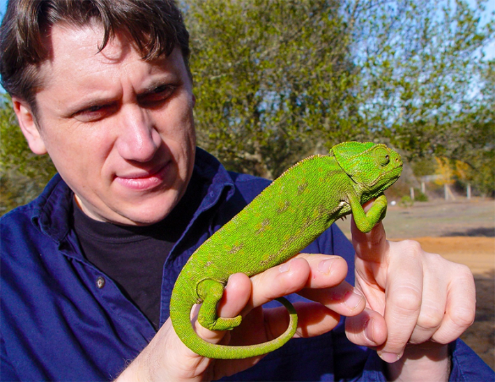
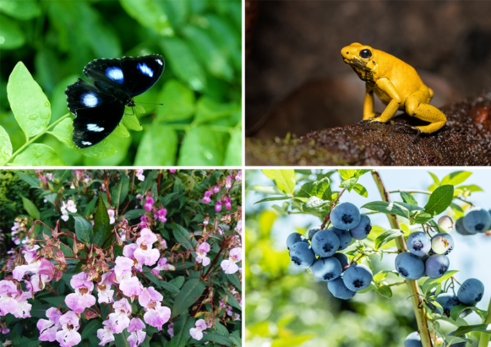
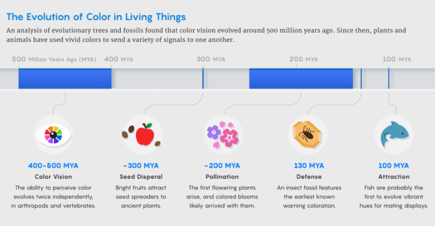

The natural world is awash with color, and many of these vibrant hues are meant to be seen. Apples blush red to coax animals to spread their seeds, lavender blooms are violet to lure in pollinating bees, and male peacocks trailed by flashy blue trains more successfully attract mates.
However, the world is colorful only for some of us. These vivid signals can be perceived by animals that can see in color; to organisms that have limited or no color vision, many of these bright colors don’t mean anything at all. This raises interesting evolutionary questions. Which came first: colorful signals or the color vision needed to see them? And when did these optical signals emerge and take off, painting the natural world in the kaleidoscopic spectrum we see today?
“Some birds are red, some snakes are red, and some plants have red fruits. In each of these cases, the red coloration serves as a signal,” said Zachary Emberts, an evolutionary biologist at Oklahoma State University. “This led us to wonder: What was the initial function of conspicuous coloration, like red, and color vision?”
Emberts and his former postdoctoral adviser John Wiens, an evolutionary ecologist at the University of Arizona, combed through research encompassing hundreds of millions of years of evolutionary history to offer a scientific answer to the chicken-and-egg question of color. The researchers used the fossil record and phylogenetic trees—timelines of species emergence that are based largely on modern traits—to infer when colorful signals may have first emerged in plants and animals. Then they tested their hypothesis that color vision and colorful signals evolved together.
“What I love about this paper is the ambition and confidence to pursue big questions and explore ideas that will inevitably involve speculation,” said William Allen, an ecologist who studies sensory systems at Swansea University in Wales and was not involved in the new study. “There is a tendency for science in the 21st century to focus on applying analytic techniques to data, and this can sometimes be at the detriment to deep thought, natural history, and curiosity.”
The Evolution of Color
As a graduate student at the University of Texas, Austin, Wiens was fascinated by pretty animals. For his dissertation, he studied blue-bellied lizards, which have earth-toned backs and sapphire undersides, to examine how sexual signaling might have evolved. He built a phylogenetic tree of lizard species and was fascinated to see that the males’ blue patches, which signal fitness to females, frequently disappeared and reappeared along the evolutionary timeline, perhaps because females stopped picking up on the signals in some lineages. That project piqued his interest in how the production and recognition of color signals might have evolved.

COLOR DETECTIVE: As a graduate student, John Wiens first encountered colored patches used by lizards as a sexual signal. Decades later, he resumed his exploration of the use of color by organisms. Credit: Ramona Walls.
There are some costs to color. For example, a vivid signal to attract a mate may attract predators as well. But the persistence of color throughout evolutionary history suggests that, for many organisms, the information it communicates is beneficial enough to outweigh the cost. However, without color vision, the value of maintaining distinctive coloration would vanish; indeed, there would be little reason for it to evolve in the first place. That made Wiens wonder why different species evolved the ability to see color—perhaps to find colorful fruit, flowers, or mates? Did those palettes even exist at the time?
He didn’t investigate right away, and spent a few decades studying evolution in reptiles and amphibians. But the questions kept pestering him. So Wiens, working with Emberts, tried to reconstruct the evolutionary histories of color in living things. The pair scoured the literature to compile fossils and phylogenetic trees, built by themselves and others, to put rough dates on when these traits might have emerged in deep time. It’s an imperfect method, but generally, if many closely related modern species have the same trait, researchers can infer that it evolved in a common ancestor.
Some components of color vision have been lost over evolutionary time.
They considered a few possibilities for how these evolutionary developments might have played out. Perhaps color vision evolved first for some non-signaling reason, such as detecting shelter, food, or landmarks. But the pair hypothesized something more dynamic: that color vision evolved around the same time as a color signal, such as flashy fruit, attractive flowers, mating colors, or warning signs.
The data revealed that distinctive colors appeared in life around 300 million years ago in fruits and seeds. Colorful flowers likely came next: Most researchers pin the most recent common ancestor of all flowering plants to the Triassic Period, between 140 million and 250 million years ago. “There’s a lot of disagreement about how old flowering plants are,” Wiens said, “but the median of the estimate is around 200 million years.”

NATURAL COLORS: Clockwise from top left: Female blue moon butterflies favor males with iridescent blue spots; golden poison frogs use yellow coloration to advertise skin toxins; redwings prefer bilberries that reflect UV light; Himalayan balsam flowers attract violet-sensing bees. Photos by Huaykwang, Thorsten Spoerlein, Valentyn Volkov, and Oli S photography / Shutterstock.
Then, about 130 million years ago, it appears that animals started using colors to ward off predators. That’s when the first hint of warning coloration appears in the fossil record, in a cockroach fossilized in amber (the specific color is not entirely clear, Wiens said). Around 105 million years ago, a group of butterflies likely flashed yellows, reds, and oranges as caterpillars; Wiens and Emberts inferred these ancestral colors from colorful descendants that exist today.
While, phylogenetically, colorful flowers seem to have a single origin, the warning hues are present in nine different phyla, which means they likely evolved independently again and again—maybe even hundreds of times, Wiens said. They have evolved even in species that don’t have color vision, likely because their predators do.
Finally, animals started wearing color to attract mates. About 100 million years ago, two types of fish—long, silvery species such as needlefish, and ray-finned species such as killifish—likely gained color, based on phylogenetic data from living species. These kinds of sexual signals also may have evolved hundreds of times across vertebrates and arthropods, the researchers found, but unlike warning colors, these cues exist only in species with color vision. “You have to be able to see the colors of your conspecifics [members of the same species] for those sexual signals to work,” Wiens said.
To his surprise, the emergence of these color-coded signals didn’t even come close to the earliest appearance of color vision. Color vision likely evolved twice independently, he found, and around the same time: between 400 million and 500 million years ago in arthropods, such as insects, and in backboned animals, such as fish. That places the evolution of color vision 100 million or 200 million years before any color signals.

Credit: Mark Belan / Quanta Magazine
In the animal kingdom, there is incredible variation in visual perception. What an animal sees depends on the structure of its retina and its neural visual processing system. Most insects can see ultraviolet, blue, and green light, but there is wide variety among arthropods; mantis shrimp eyes have up to 12 different channels of color, revealing the ultraviolet spectrum and polarized light. The ancestor of living vertebrates could likely detect red, purple, blue, and green—an ability that was maintained in lizards, birds, lampreys, and lungfish, among other vertebrate groups, Wiens said. But some components of color vision have been lost over evolutionary time. Hagfish can’t detect red. Sharks can’t see blue. Human eyes have three photoreceptor cones that allow us to make out blues, greens, and reds, but dogs and rabbits have only two cones, which reduces the number of shades they can distinguish.
Wiens and Emberts’ data supports the hypothesis that color evolved for some as-yet-unknown reason before any of these flashy signals. “It was color vision first, then fruit, then flowers, then warning signals, and then sexual signals,” Wiens said.
Coming and Going
The researchers’ effort to reconstruct deep time is admittedly imperfect. Colors don’t readily fossilize, and when they do, scientists can’t infer the color’s function unless the animal has living descendants. And for all the data they involve, evolutionary trees are inherently speculative. Some traits can evolve multiple times in different lineages. For example, juniper berries and blueberries are both blue, but their ancestors may have developed that coloration separately. Other traits can come and go, like the lizards’ blue belly patches. If we know that signals can disappear and reappear over millions of years, it’s hard to be certain that a common ancestor actually possessed that shared trait.
“This evolutionary lability has the effect of blurring whether a color adaptation existed in deep time or not,” Allen said. “If, for example, a lineage gains or loses warning color once every million years, it is very difficult to infer from the traits of current species whether an ancestor living hundreds of millions of years ago had warning color.”
A vivid color, whether it’s a pure pigment or a reflective structure, takes action to organize.
That’s why using phylogenies to date the origin of a function has inherent uncertainties. “Looking at what’s around nowadays doesn’t tell you very much because it’s just coming and going,” said the neuroscientist Daniel Colaco Osorio, who studies animal vision at the University of Sussex and was not involved in the study. But Wiens insists that the only way we can know that traits disappear and reappear is by using evolutionary trees to test this kind of hypothesis. This is the best method we have to peer into the evolutionary past from the present, he said. “How does one claim [that traits come and go] without doing a study like ours?”
To be clear, there was color in the world before color vision. Plant leaves, for example, reflect green light even if there are no eyes to see it. In 1999, Osorio studied color vision in chicks and suggested that it serves a more general purpose. “It could just be recognizing objects or navigating around the place,” he speculated. A prevailing theory was popularized in 2000, when Vadim Maximov proposed that color vision evolved to aid vertebrates in low-light aquatic conditions. The presence of two classes of photoreceptors, he argued, helped reduce the “flicker” beneath the surface of shallow water, which helped aquatic creatures chase prey and avoid predators. That would explain why the building blocks of color vision arose just after the active predatory lifestyle was mastered, but well before there was a more obvious use for it.
Color signals maintained by living things across evolutionary time are of a different character. In 2019, Osorio suggested that a vivid color, whether it’s a pure pigment or a reflective structure, takes action to organize. They are therefore evidence of work against the forces of entropy; it’s generally something an organism evolved for a reason. “If you empty the contents of your vacuum cleaner bag, it’s kind of gray because everything’s mixed together,” he said. “If you have a structure with meaning or purpose, that can be indicated by having a bright or pure color … which isn’t particularly tied to the meaning of the signal.” His research has demonstrated mathematically that what looks like a vivid, pure color to one animal is likely to look vivid and pure to another, regardless of their visual system.
Some questions are ultimately unknowable—but can still be useful or enjoyable to ask. Wiens and Emberts’ review is a step toward understanding why the natural world is so colorful. Plus, Wiens found that over the past 100 million years, there’s been an explosion in warning and sexual signals driven by signaling between birds, lizards, and fish. He believes that this trend might continue—which suggests nature is on track to get even more dazzling.
For more, listen to The Quanta Podcast: Apple | Spotify.
This article was originally published on Quanta.
Lead image: A mantis shrimp displays striking coloration and can see it better than most animals: Its eyes have 12 color channels that can perceive the ultraviolet spectrum and polarized light. Credit: Samy Kassem / Shutterstock.
References
- Original Article: https://nautil.us/when-nature-burst-into-vivid-color-1235524/